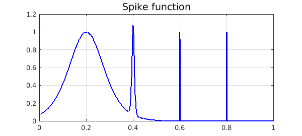

We demonstrate the adaptive capabilities of Chebfun by integrating the "spike function"
f = @(x) sech(10*(x-0.2)).^2 + sech(100*(x-0.4)).^4 + ...
sech(1000*(x-0.6)).^6 + sech(1000*(x-0.8)).^8;
(which appears as F21F in [1]) over $[0, 1]$.
The Chebfun representation is a very high degree polynomial, but this causes no difficulty.
ff = chebfun(f,[0 1])
LW = 'linewidth';
plot(ff,'b',LW,1.6), grid on
title('Spike function','FontSize',14)
ff =
chebfun column (1 smooth piece)
interval length endpoint values
[ 0, 1] 14059 0.071 4.5e-07
vertical scale = 1.1

Here is a confirmation that even the narrowest spike is well resolved:
semilogy(ff,'b','interval',[.795,.805],LW,1.6), grid on
title('Zoom, on semilogy axes','FontSize',14)

Now we compute the integral. In order to estimate the time for this computation, we create the chebfun again without plotting it.
tic ff = chebfun(f,[0 1]); sum(ff) toc
ans = 0.211717021214835 Elapsed time is 0.101789 seconds.
Now the degree of that polynomial was forced to be extraordinarily high in order to resolve the narrowest spike. A much more compressed representation of $f$ can be attained by constructing the chebfun piecewise, using "splitting on". As of December 2015, if this is done with default parameters, Chebfun fails to detect the narrowest spike:
ff = chebfun(f,[0 1],'splitting','on')
plot(ff,'b',LW,1.6), grid on
title('Unresolved spike function with splitting on','FontSize',14)
ff =
chebfun column (6 smooth pieces)
interval length endpoint values
[ 0, 0.38] 74 0.071 0.11
[ 0.38, 0.44] 87 0.11 0.034
[ 0.44, 0.59] 42 0.034 0.0015
[ 0.59, 0.6] 97 0.0015 0.0055
[ 0.6, 0.62] 76 0.0055 0.00081
[ 0.62, 1] 16 0.00081 4.5e-07
vertical scale = 1.1 Total length = 392
We can fix the problem by forcing Chebfun to sample at more points. Note that the total number of parameters is 25 times less than with the global representation.
ff = chebfun(f,[0 1],'splitting','on','minSamples',100)
plot(ff,'b',LW,1.6), grid on
title('Resolved spike function with splitting on','FontSize',14)
ff =
chebfun column (10 smooth pieces)
interval length endpoint values
[ 0, 0.38] 74 0.071 0.11
[ 0.38, 0.44] 87 0.11 0.034
[ 0.44, 0.59] 42 0.034 0.0015
[ 0.59, 0.6] 97 0.0015 0.0055
[ 0.6, 0.62] 76 0.0055 0.00081
[ 0.62, 0.78] 16 0.00081 3.6e-05
[ 0.78, 0.8] 49 3.6e-05 2.6e-05
[ 0.8, 0.8] 56 2.6e-05 0.11
[ 0.8, 0.81] 71 0.11 1.9e-05
[ 0.81, 1] 15 1.9e-05 4.5e-07
vertical scale = 1.1 Total length = 583
If speed is all you care about, though, nothing has been gained over the first, global approach. We compute the chebfun again and see that the integral is the same to full precision but the timing is worse:
tic ff = chebfun(f,[0 1],'splitting','on','minSamples',100); sum(ff) toc
ans = 0.211717021214835 Elapsed time is 0.282062 seconds.
References
- D. K. Kahaner, "Comparison of numerical quadrature formulas", in J. R. Rice, ed., Mathematical Software, Academic Press, 1971, 229-259.